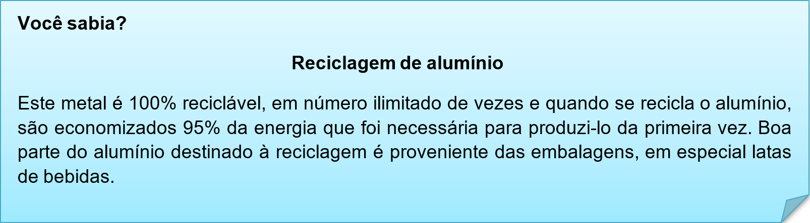
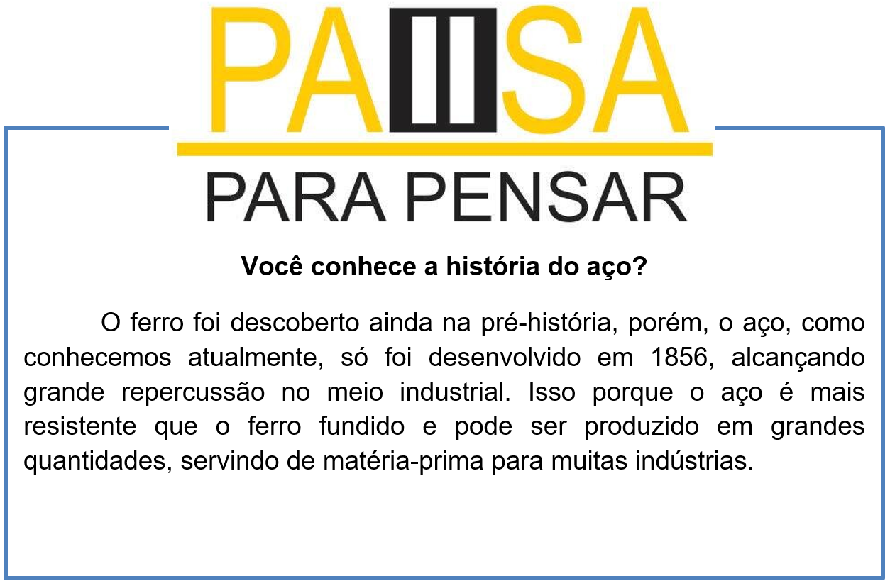
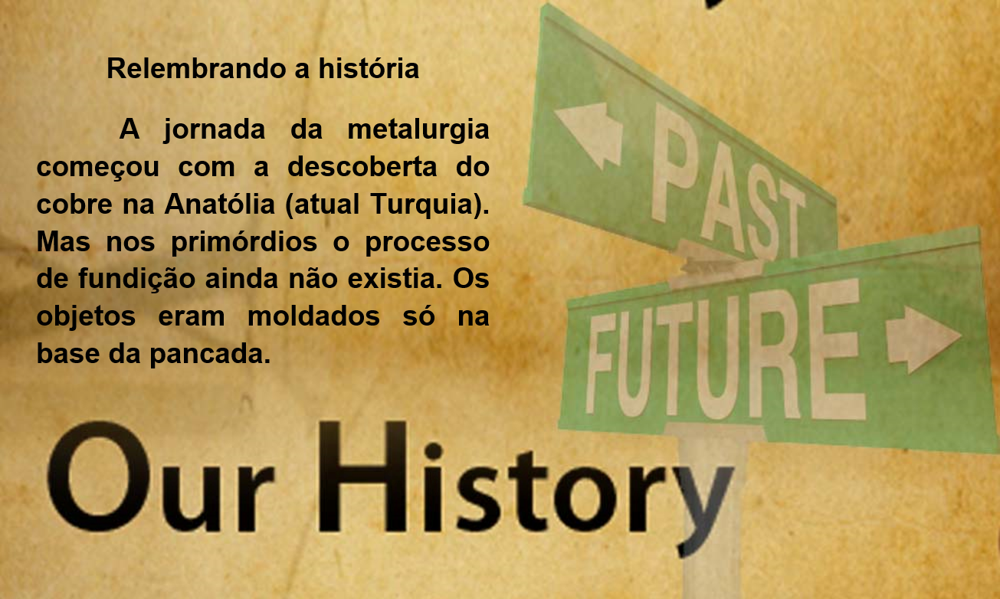

Capítulo 1: Metallurgy – Metalúrgica
Nessa unidade vamos explorar o vocabulário e conceitos sobre metalurgia então vamos ver um tema introdutório sobre a importância da metalurgia.
Why is metallurgy so important?
Metallurgy plays a crucial role in enabling sustainability, being the source of these elements and derived materials as well as the ultimate ' organism' or unit operation that closes the material cycle as one has to reduce and/or re-melt metals to refine these to new high quality products.

Por que a metalurgia é tão importante?
A metalurgia desempenha um papel crucial na viabilização da sustentabilidade, sendo a fonte desses elementos e materiais derivados, bem como a operação final do 'organismo' ou unidade que fecha o ciclo do material, pois é necessário reduzir e / ou refazer a fusão de metais para refinar esses elementos. novos produtos de alta qualidade
Contextualizando - processamento de metais
FOUNDRY - Fundição - metal fundido é vertida para uma forma de molde.
FORGING - Forjar - um vermelho-quente boleto é martelado em forma.
ROLLING - Rolando - um bilete é passado através de rolos de sucessivamente mais estreitas para criar uma folha.
LASER COATING - Revestimento do laser - o pó metálico é soprado através de um feixe de laser móvel (por exemplo, montado sobre uma máquina NC 5-eixo). O metal derretido resultante atinge um substrato para formar um banho de fusão. Movendo a cabeça do laser, é possível colocar as faixas e construir uma peça tridimensional.
EXTRUSION - Extrusão - um metal quente e maleável é forçado sob pressão através de uma fieira , que molda-la antes que arrefece.
SINTERING - Sinterização - um metal em pó é aquecido num ambiente não oxidante depois de ter sido comprimido dentro de um molde.
MACHINING - Usinagem - tornos , máquinas de moagem , e brocas de cortar o metal frio para moldar.
MACHINING MANUFACTURING - Fabricação - chapas de metal são cortados com guilhotinas ou cortadores de gás e dobrada e soldada em forma estrutural.
3D PRINTING - Impressão em 3D - sinterização ou fusão do metal em pó amorfo num espaço 3D para fazer qualquer objecto a moldar.

Nessa lista temos os elementos brutos que após o processo de metalurgia se transformam em objetos e produtos. Os minerais nos fornecem os metais, indispensáveis à fabricação tanto de coisas enormes, como aviões, quanto daquelas minúsculas, como alfinetes, clipes ou percevejos.
aluminium > alumínio brass > bronze bronze > bronze copper > cobre gold > ouro iron > ferro lead > chumbo magnesium > magnésio mercury > mercúrio nickel > níquel platinum > platina silver > prata
Assista ao vídeo e aprenda mais sobre metalurgia e seus processos

Reconstruindo conhecimento – Verbo modal CAN
Os modal verbs ou verbos modais são diferentes dos verbos “normais” do inglês como work (trabalhar), play (jogar, tocar, brincar), talk (falar), etc. Os verbos modais nos passam informações extras sobre o verbo principal da frase, que vem acompanhado dele. Isso quer dizer que ele dá um sentido extra para o verbo.
O can serve para expressar três ideias diferentes: habilidade, para pedir permissão ou fazer um pedido e para exprimir uma possibilidade ou probabilidade.
Outra informação importante sobre os modal verbs é que eles possuem apenas uma forma para todas as pessoas. Isso quer dizer que não adicionamos “s” para a terceira pessoa do singular e também não adicionamos ing, ed ou qualquer sufixo ao verbo.
Cada verbo modal tem a função de expressar certas ideias veremos o verbo can. Veja como usar este verbo em frases afirmativas:
Singular
I can sing.
Eu posso/consigo cantar.
You can sing.
Você pode cantar.
He/She/It can sing.
Ele/Ela/Isso pode cantar.
Plural
We can sing.
Nós podemos cantar.
You can sing.
Vocês podem cantar.
They can sing.
Eles podem cantar
É importante lembrar que os verbos modais sempre são acompanhados de um outro verbo no infinitivo (sem o to) e não precisam de verbos auxiliares, pois já fazem esse papel na frase. Por isso, para formarmos frases interrogativas, basta colocar o can no começo da frase:
Can you sing?
Você consegue cantar?
Can he sing?
Ele consegue cantar?
Can they sing?
Eles podem cantar?
Para formarmos frases negativas, colocamos o not na frente do can:
I cannot sing sing ou I can’t sing.
Eu não consigo/posso cantar.
She cannot sing ou she can’t sing.
Ela não consegue/pode cantar.
We cannot sing ou we can’t sing.
Nós não conseguimos/podemos cantar.
Aplicando ao nosso vocabulário
The solder can make metals. > O soldador pode fazer metais.
With aluminiu we can pans. > Com alumínio podemos fazer panelas.
We can jewerly with gold and silver. > Podemos fazer joias com ouro e prata.
O que aprendi
• Nesta unidade aprendemos o vocabulário do setor metalúrgico;
• Vimos sobre a história dessa indústria;
• Na parte gramatical trabalhamos com verbo modal can.
Praticando
Usando nosso vocabulário de metais, faça uma lista de objetos que possam ser produzidos com os metais citados no nosso estudo.
Aluminium – pans (panelas)
__________________________
__________________________
__________________________
__________________________
__________________________
__________________________
Analise a imagem e elabore sentenças usando o verbo modal can. O que eles podem fazer ou não.